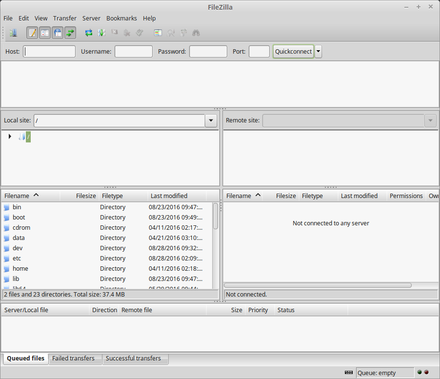
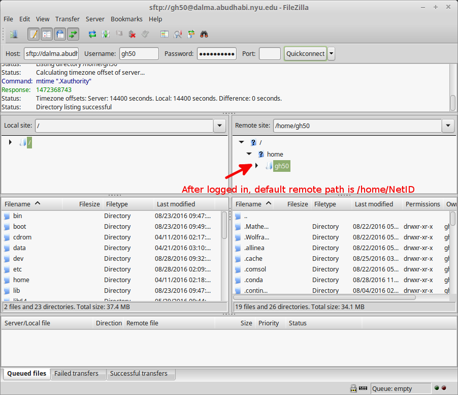
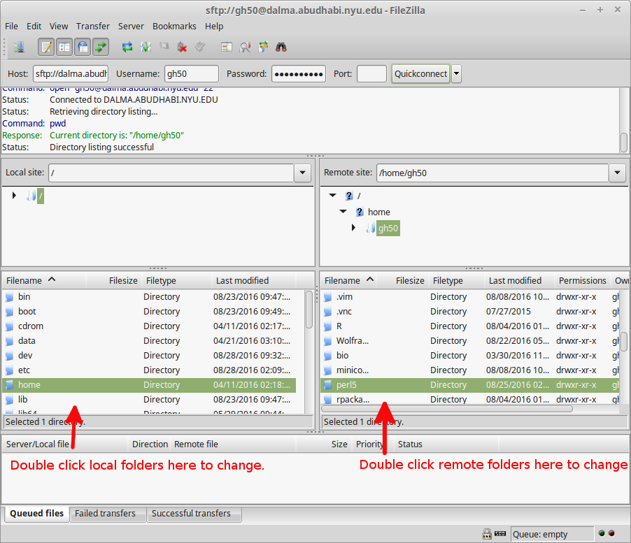
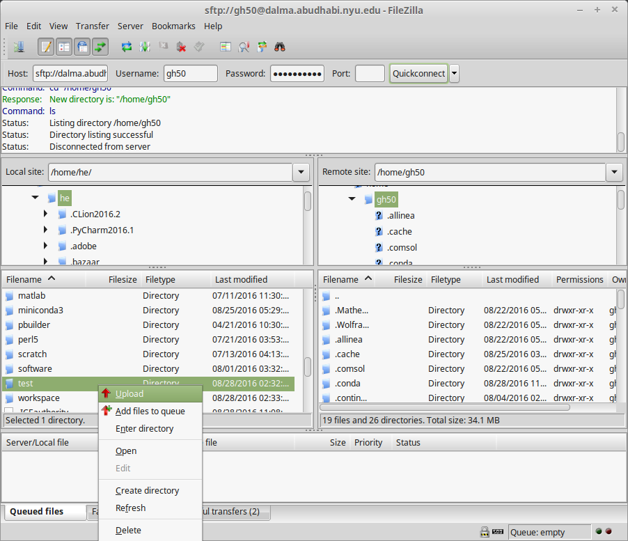
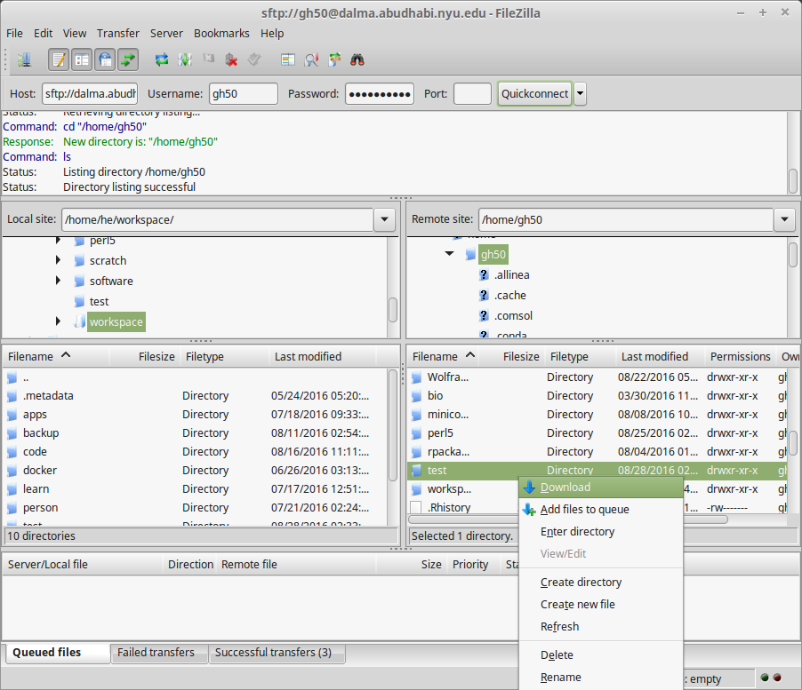

File Transfer using FileZilla¶
You want to transfer data from / to HPC cluster under Windows, Mac or Linux. But you don’t want to use command line. Instead, you want to use an open-source SFTP(SSH File Transfer Protocol) client with easy-to-use GUI. Then, FileZilla is the choice for you. Follow the instructions below.
Step-by-step guide¶
First, install and configure FileZilla in your workstation. These steps need to be done only once.
Open your browser in your workstation.
Open this page: https://filezilla-project.org/
Click Download FileZilla Client.
After finishing the downloading, finish the installation. If you have any question, please contact us at jubail.admins@nyu.edu or check this guide: https://wiki.filezilla-project.org/Client_Installation
Once the installation is done,
- If you are outside campus network, connect to NYU VPN first.
Open FileZilla. It will prompt a GUI.
- Enter the Host, Username, Password and Port. Click Quickconnect, as shown in the screenshot below:
Host: jubail.abudhabi.nyu.edu
Username: Your NetID
Password: Your NetID password
Port: 22
Remote host is connected. The window on the left is local site (your workstation), while the window on the right is remote site (Jubail). By default, the remote path is
$HOME, e.g.,/home/NetID.If you want to change the current directory, double click the target folder.
To upload a folder or file, right click the target folder or file from local site, select Upload.
To download a folder or file, right click the target folder or file from remote site, select Download.

Note
Check this Link for general help on FileZilla (how to change directory, upload / download and comparison…)